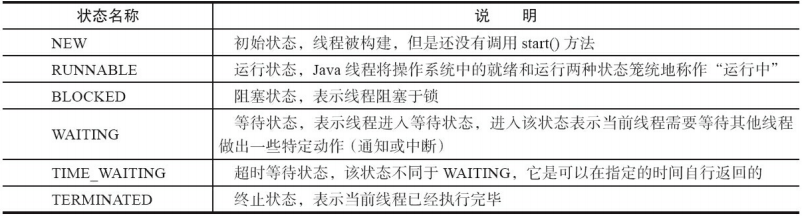
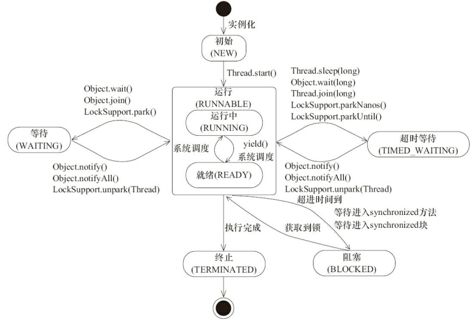
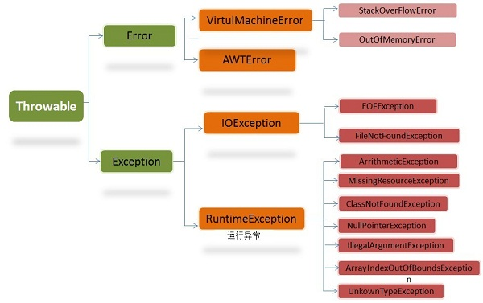
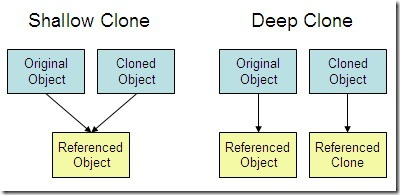

Java Core
Example lead - highlighted near the title

Page content
Java 多线程
 
异常处理

BIO,NIO,AIO 有什么区别?
- BIO (Blocking I/O): 同步阻塞I/O模式，数据的读取写入必须阻塞在一个线程内等待其完成。在活动连接数不是特别高（小于单机1000）的情况下，这种模型是比较不错的，可以让每一个连接专注于自己的 I/O 并且编程模型简单，也不用过多考虑系统的过载、限流等问题。线程池本身就是一个天然的漏斗，可以缓冲一些系统处理不了的连接或请求。但是，当面对十万甚至百万级连接的时候，传统的 BIO 模型是无能为力的。因此，我们需要一种更高效的 I/O 处理模型来应对更高的并发量。
- NIO (New I/O): NIO是一种同步非阻塞的I/O模型，在Java 1.4 中引入了NIO框架，对应 java.nio 包，提供了 Channel , Selector，Buffer等抽象。NIO中的N可以理解为Non-blocking，不单纯是New。它支持面向缓冲的，基于通道的I/O操作方法。 NIO提供了与传统BIO模型中的 Socket 和 ServerSocket 相对应的 SocketChannel 和 ServerSocketChannel 两种不同的套接字通道实现,两种通道都支持阻塞和非阻塞两种模式。阻塞模式使用就像传统中的支持一样，比较简单，但是性能和可靠性都不好；非阻塞模式正好与之相反。对于低负载、低并发的应用程序，可以使用同步阻塞I/O来提升开发速率和更好的维护性；对于高负载、高并发的（网络）应用，应使用 NIO 的非阻塞模式来开发
- AIO (Asynchronous I/O): AIO 也就是 NIO 2。在 Java 7 中引入了 NIO 的改进版 NIO 2,它是异步非阻塞的IO模型。异步 IO 是基于事件和回调机制实现的，也就是应用操作之后会直接返回，不会堵塞在那里，当后台处理完成，操作系统会通知相应的线程进行后续的操作。AIO 是异步IO的缩写，虽然 NIO 在网络操作中，提供了非阻塞的方法，但是 NIO 的 IO 行为还是同步的。对于 NIO 来说，我们的业务线程是在 IO 操作准备好时，得到通知，接着就由这个线程自行进行 IO 操作，IO操作本身是同步的。查阅网上相关资料，我发现就目前来说 AIO 的应用还不是很广泛，Netty 之前也尝试使用过 AIO，不过又放弃了。
深拷贝 vs 浅拷贝
-
浅拷贝：对基本数据类型进行值传递，对引用数据类型进行引用传递般的拷贝，此为浅拷贝。
-
深拷贝：对基本数据类型进行值传递，对引用数据类型，创建一个新的对象，并复制其内容，此为深拷贝。
-

Functional Interfaces In Java
https://www.geeksforgeeks.org/functional-interfaces-java/
- Functional Interfaces 只能有一个抽象方法 (因为本身就是代表一个方法), 但是可以有multiple default methods
- 常见的有 Runnable, ActionListener, Comparable, java.util.function package 里有很多builtin functional interfaces
- @FunctionalInterface annotation is used to ensure an interface can’t have more than one abstract method. The use of this annotation is optional.
- 可以用lambda表达式给其赋值
- 一个sample:
// Java program to demonstrate lamda expressions to implement
// a user defined functional interface.
@FunctionalInterface
interface Square
{
int calculate(int x);
}
class Test
{
public static void main(String args[])
{
int a = 5;
// lambda expression to define the calculate method
Square s = (int x)->x*x;
// parameter passed and return type must be
// same as defined in the prototype
int ans = s.calculate(a);
System.out.println(ans);
}
}
Optional
用于避免空指针异常, 以及支持Functional Interface实现用lambda表达式+链式操作
-
常用方法
- ifPresent方法
- orElseGet和orElseThrow方法
- filter方法
- map方法
- map方法
-
sample
// 以前的代码
public static String test3(User user) {
if (user != null && user.getName() != null) {
return user.getName().toUpperCase();
} else {
return null;
}
}
// 现在的代码
public static String test(User user) {
return Optional.ofNullable(user)
.map(user1 -> user1.getName())